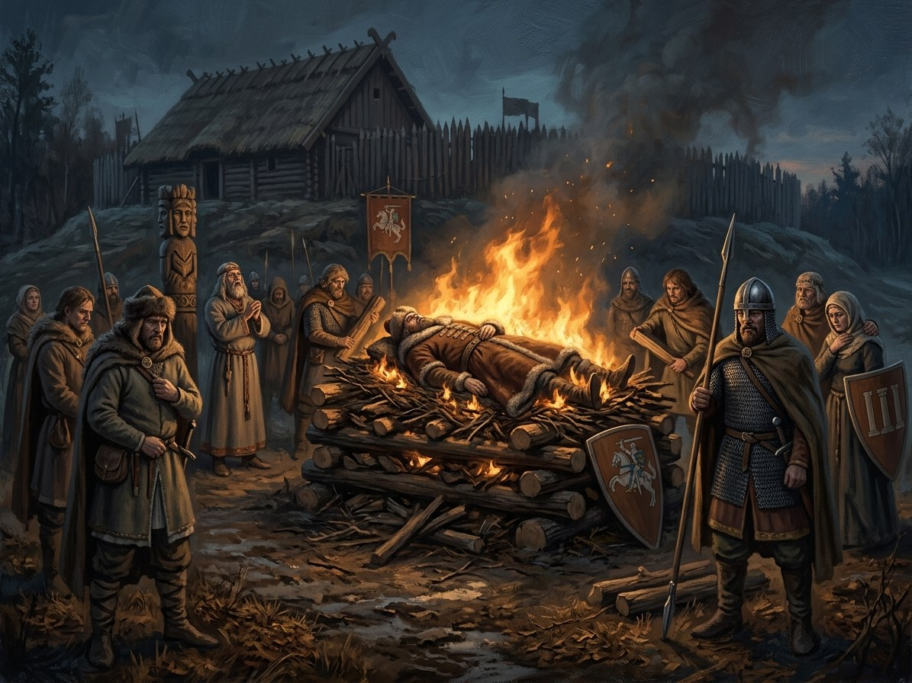

Algirdas dies; cremated¶
What the chronicles say [Historical record]¶
Algirdas died in late May 1377 (the exact day and place are not secure; Maišiagala is suggested). Lithuanian tradition has him cremated on a pyre with his best horses, traditionally eighteen, and this is the usual reading of the pagan rite; the horse count and the site are traditional, not documented. A later monastic-conversion tradition competes with near-contemporary evidence of pagan cremation; it is not equally secure testimony. Baronas’s source discussion rejects treating the late conversion account as established biography. The pyre is associated with Maišiagala/Kukaveitis, although its exact location is uncertain. Shortly before his death he named Jogaila, his son by Uliana of Tver, as heir over the sons of his first wife, having earlier favoured Fiodor. Jogaila became Grand Duke in 1377 and Kęstutis stayed on as co-ruler. See the Wikipedia article on Algirdas.
Algirdas dies; cremated

Algirdas dies; cremated · event¶
Tipas |
įvykis |
Metai |
1377 |
Status |
Istoriniai duomenys |
Knyga |
|
Pastaba |
Algirdas dies in May 1377; cremated with 18 battle chargers in the sacred grove. |
Where: Vilnius (on the map)
What really happened [The saga’s invention]¶
The saga deliberately combines these traditions in fiction; it does not claim that both are historically proved. It also relocates the pyre to the hill above Vilnius to keep the farewell within the saga’s sacred landscape. Algirdas takes the black Orthodox cowl the night before, speechless, with a lifted hand, and is burned on a hill above the Neris with the pagan rite beside a Ruthenian monk reading prayers. „Ugnis neklausia, ko prašei“ (the fire does not ask what you asked), he had said. The first log is laid by Jogaila, the designated heir leading the father, following the Sovijus rule of the old legend. Eglė, seventeen, carries the Šventaragis flame in a clay pot, and the fire hesitates three breaths before it catches. Birutė feels one thread of the Silent Pact slip and another tremble. Earlier, at the deathbed, Algirdas makes Kęstutis swear to protect Jogaila, and Kęstutis, who cannot give a promise he will not keep, swears only that no hair will fall by his own hand or order. That narrow oath is the gap through which Skirgaila later walks.
Consequences¶
In the saga it is the first loss among the oath-takers of 1345: the Pact weakens until Kęstutis alone holds it. Jogaila’s accession (1377) leads directly to the secret treaty of Dovydiškės in 1380, the breach that becomes the civil war and Krėva. The 1345 oath itself is here.
Dramatisation¶
Book VI ch. 28 „Algirdo Valia“ (Kęstutis, spring 1377, first thunder), ch. 29 „Algirdo Laužas“ (Birutė, May 1377, the hill above the Neris), ch. 30 „Epilogas: Senasis Šernas“ (Kęstutis, autumn 1377, Trakai). It ends Book VI and hands over to Book I ch. 1.
Sąsajos¶
graph LR
algirdas["Algirdas"]
ev_algirdas_dies["Algirdas dies; cremated"]
vilnius["Vilnius"]
ev_algirdas_dies -->|Location| vilnius
algirdas -->|Took part in| ev_algirdas_dies
style ev_algirdas_dies stroke-width:3px